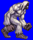
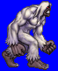
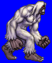
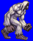

Height: 2-3 meters Weight: 440-800 lbs.
Habitat: Mountainous areas Origin: United States, Canada
Meaning: English word "Bigfoot"
Assumed to live in the snowy Rocky mountains in the western United States, Bigfoot is said to be a large biped covered in hair from head to toe, much like an oversized monkey. Much like the Loch Ness monster "Nessie", many sightings have been reported, but Bigfoot's existence hasn't been empirically verified with incontrovertable evidence.